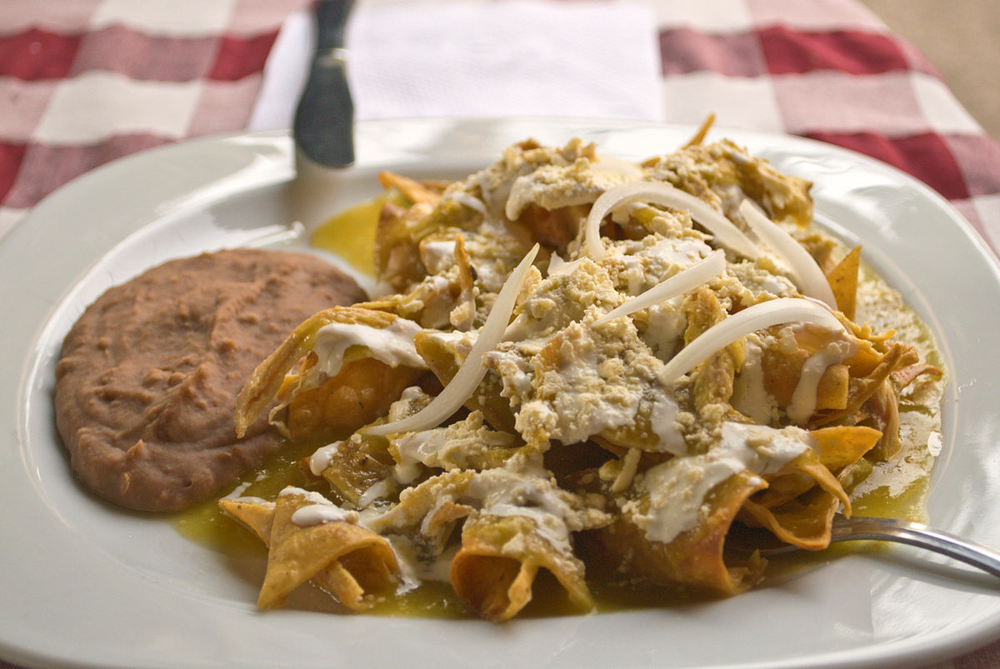

Chilaquiles

This recipe is a mexican classic, many would say that is just roasted tortilla whit sausage, but is much more than that.
The dish is the representation of a hole culture, as simple or as complex as you want, so many different variations that is hard to tell about
everyone of them. This time, we will go through the most simple recipe to cook red chilaquiles.
Ingredients
- 8 Tortillas from yesterday
- 2 Tomatoes
- Oil
- 2 Green chilis
- 1 Garlic head
- 1/4 Onion
- Mexican cream
- Cheese
Steps
For the Salsa:
- Put a pot in the stove whit water, the tomatoes and the chilis and let it boil until the skin of the tomatos begins to fall apart
- Once they are soft, put the tomatoes, the chili, the garlic head, some water from the boiling pot, salt and blend it all
For the tortillas:
- Cut the 8 tortillas in triangles
- In a pan, add some oil that can cover all the tortillas and fry them
- Once they are goldish, retire form the fire, get them out of the pan and put them in a dish whit a towel that can absorbe the remainig oil
- Retire the remaining oil from the pan and mix the salsa, the tortillas and put some chesse above
- Leave them until the tortillar get softer
- Once is done, put it in a dish, add the cream and the onion chopped into squares.
- Done, bitch